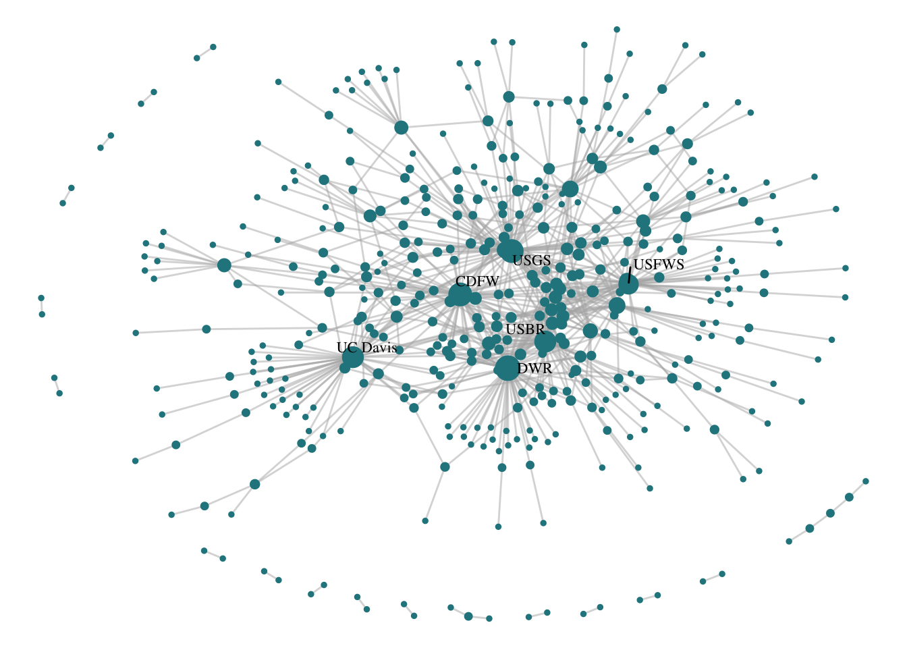
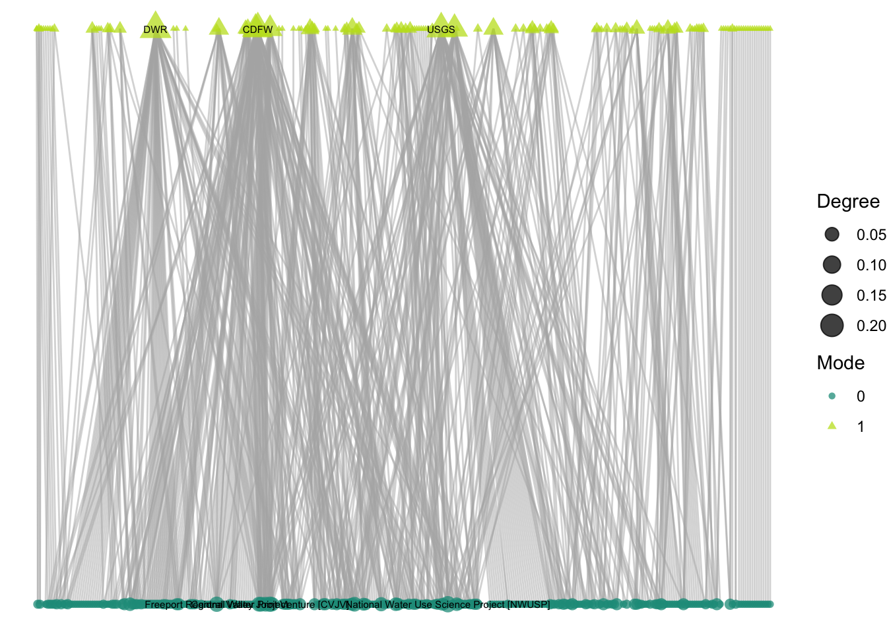
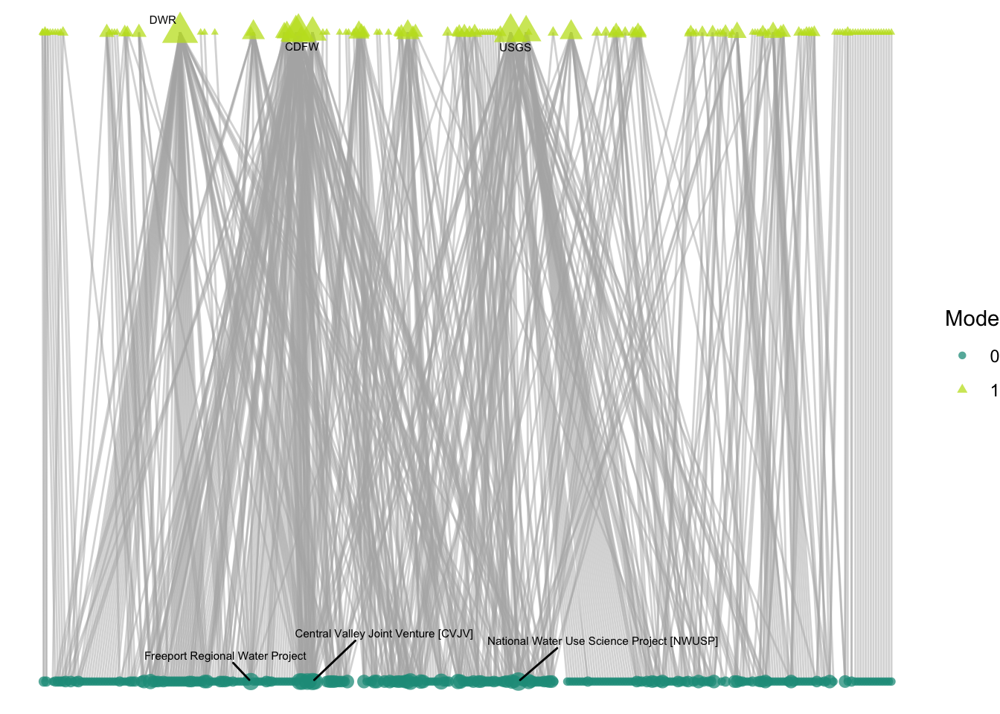
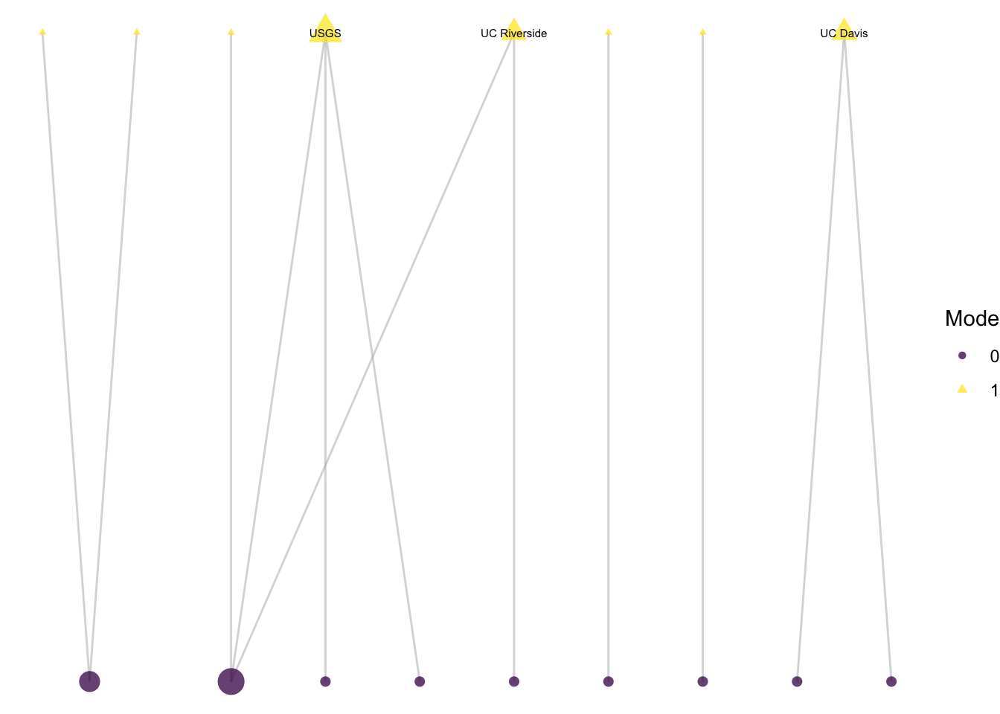
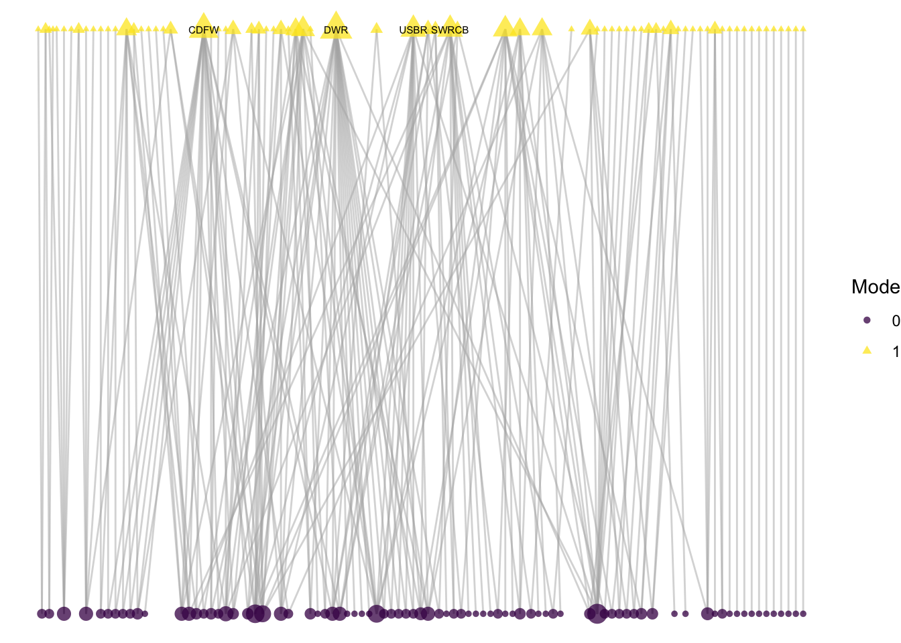
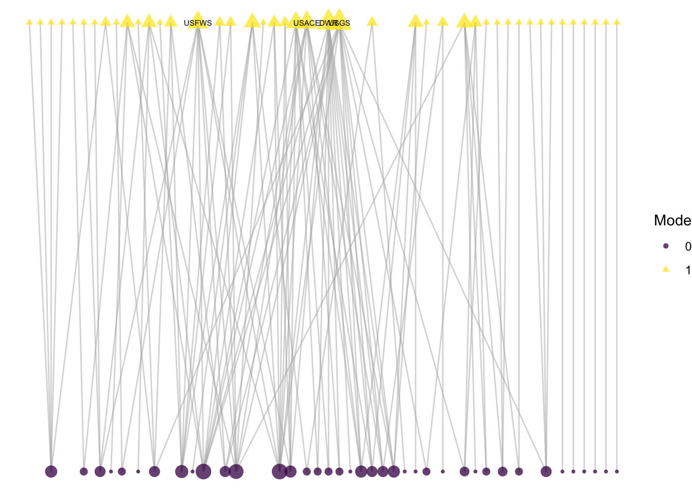

6 Two-mode visualization
6.1 Guiding questions:
Next we’re going to shift to the two-mode network. That is, a network consisting of two distinctly different types of nodes, where ties are possible between (but not within) each node type. For our data, our two modes are research organizations and projects, where researchers are linked to projects based on their involvement, but in this case there is no link between projects or between researchers. With our two-mode network, we want to know:
- Across the Delta science projects, which have the largest number of collaborators?
- How do organizations’ activity differ across different scientific and management themes: climate, land use, governance, and flooding? (subgraphs based on edge attribute)
- Are most-active members typically leaders or contributors? (make subgraphs based on edge attribute + make multiple plots with fixed coordinates)
We will be using approaches that are similar to one-mode networks, but there are some features that we will want to rethink given that there are differences given what we can calculate and what we want to communicate.
6.2 Representing two-mode networks
Analytical approaches for two-mode networks are slightly different from one-mode networks given that there are unique structural limitations of two-mode networks. As we’ve discussed already, in two-mode networks there cannot be connections between nodes of the same mode. Because of this, many structural statistics that you can calculate are not directly transferable. We’ll start with the one-mode visualization approach that we’ve started with, then build on these to improve our representation of the two-mode features.
6.2.1 The one-mode approach
With one-mode networks, we used sna::degree() function to calculate the number of connections per node, and we can apply this same function to our two-mode network, net2, then run through the functions we’ve made so far to create a plot: label_top_degree() and netplot_function().
net2 %v% 'degree' <- degree(net2)
net2 %v% 'labels' <- label_top_degree(net2, 5)
netplot_function(net2)
This is a fine start, but here we aren’t communicating anything about to two-modality of the data. Without any further specification, it just looks like a one-mode network with some central nodes. We could consider an important attribute in our data, mode, telling is which of those points are organizations (mode 1) and which are projects (mode 0).
net2 %v% 'mode'## [1] 1 1 1 1 1 1 1 1 1 1 1 1 1 1 1 1 1 1 1 1 1 1 1 1 1 1 1 1 1 1 1 1 1 1 1 1 1
## [38] 1 1 1 1 1 1 1 1 1 1 1 1 1 1 1 1 1 1 1 1 1 1 1 1 1 1 1 1 1 1 1 1 1 1 1 1 1
## [75] 1 1 1 1 1 1 1 1 1 1 1 1 1 1 1 1 1 1 1 1 1 1 1 1 1 1 1 1 1 1 1 1 1 1 1 1 1
## [112] 1 1 1 1 1 1 1 1 1 1 1 1 1 1 1 1 1 1 1 1 1 1 1 1 1 1 1 0 0 0 0 0 0 0 0 0 0
## [149] 0 0 0 0 0 0 0 0 0 0 0 0 0 0 0 0 0 0 0 0 0 0 0 0 0 0 0 0 0 0 0 0 0 0 0 0 0
## [186] 0 0 0 0 0 0 0 0 0 0 0 0 0 0 0 0 0 0 0 0 0 0 0 0 0 0 0 0 0 0 0 0 0 0 0 0 0
## [223] 0 0 0 0 0 0 0 0 0 0 0 0 0 0 0 0 0 0 0 0 0 0 0 0 0 0 0 0 0 0 0 0 0 0 0 0 0
## [260] 0 0 0 0 0 0 0 0 0 0 0 0 0 0 0 0 0 0 0 0 0 0 0 0 0 0 0 0 0 0 0 0 0 0 0 0 0
## [297] 0 0 0 0 0 0 0 0 0 0 0 0 0 0 0 0 0 0 0 0 0 0 0 0 0 0 0 0 0 0 0 0 0 0 0 0 0
## [334] 0 0 0 0 0 0 0 0 0 0 0 0 0 0 0 0 0 0 0 0 0 0 0 0 0 0 0 0 0 0 0 0 0 0 0 0 0
## [371] 0 0 0 0 0 0 0 0 0 0 0 0 0 0 0 0 0 0 0 0 0 0 0 0 0 0 0 0 0 0 0 0 0 0 0 0 0
## [408] 0 0 0 0 0 0 0 0 0 0 0 0 0 0 0 0 0 0 0 0 0 0 0 0 0 0 0 0To account for mode in our visualization, we could start by adding an aesthetic feature to our visualization, changing the shape and color to be determined by mode.
set.seed(21)
ggraph(net2, layout = 'fr') +
geom_edge_link(width = 0.5, alpha = 0.5, color = "gray70") +
geom_node_point(aes(size = degree,
shape = factor(mode),
color = factor(mode))) +
theme_void() +
scale_color_viridis_d() +
geom_node_text(aes(label = labels),
size = 3,
color="black") +
labs(size = "Degree", color = "Mode", shape = "Mode")
So now we can see our modes, but there are a few things that are somewhat misrepresented when we use this approach:
Degree size is skewed by the limitations of the mode. Meaning: due to the nature of how two-mode networks are structured, it is likely that one mode will be more represented than the other. For instance in this case, organizations can participate in multiple projects across time, but projects are limited to the participants involved in the one time span on the project. Because of this, we see that organizations are all highest-degree, and don’t know much about the projects that are highly collaborative.
The layout of the network hides that within-mode connections are not possible. By using one of the more classical layout algorithms that try to limit distance and group similar nodes, it is hard to notice that no two yellow triangles are connected to one another, nor are there any connections between the purple circles.
So let’s address each of these points.
6.2.2 Normalized degree in two-mode networks
One way to adjust and compare degree between modes is to calculate normalized degree for each mode. We can do this using the bipartite package:
#install.packages('bipartite')
library(bipartite)
?bipartite::NDThis function, designed to think of bipartite (two-mode) data as species on different trophic levels, takes a matrix and uses that to calculate normalized degree for each mode.
degree_norm_bip <- bipartite::ND(as.matrix(net2), normalised = T)The output has two measures of degree, one for rows (in this case called ‘lower’ because the package was designed to think about lower and higher trophic levels) and one for columns (‘higher’). Check which matches up.
# 'lower' is for for the rows, so in our case, organizations
length(degree_norm_bip$lower) == length(unique(edges_2mode$org_id))## [1] TRUE# 'higher' is for for the columns, so in our case, projects
length(degree_norm_bip$higher) == length(unique(edges_2mode$project_id))## [1] TRUENow, we want to sign this bipartite degree in accordance with that order. BUT, note that this function orders degree based on numeric order of id, so we want to make sure this matches with the order of nodes in our network.
nd_output <- c(degree_norm_bip$lower, degree_norm_bip$higher)
table(net2 %v% 'vertex.names' == as.numeric(names(nd_output)))##
## TRUE
## 435Looks good, so now let’s assign this new degree measure to our network. [NOTE: IS THIS DOING WHAT I EXPECT]
net2 %v% 'degree_norm_bip' <- nd_output
# Note: normalizing the degree for the whole network vs. normalizing degree for
# each mode is a different process
summary((net2 %v% 'degree_norm_bip')[net2 %v% 'mode' == 0])## Min. 1st Qu. Median Mean 3rd Qu. Max.
## 0.007246 0.007246 0.014493 0.016591 0.021739 0.086957summary((net2 %v% 'degree_norm_bip')[net2 %v% 'mode' == 1])## Min. 1st Qu. Median Mean 3rd Qu. Max.
## 0.003367 0.003367 0.003367 0.016591 0.010101 0.232323Now, let’s assign labels but let’s pull out the labels for each mode specifically:
topdeg_mode0 <- data.frame("deg" =
(net2 %v% 'degree_norm_bip')[net2 %v% 'mode' == 0]) %>%
top_n(3)
topdeg_mode1 <- data.frame("deg" =
(net2 %v% 'degree_norm_bip')[net2 %v% 'mode' == 1]) %>%
top_n(3)
net2 %v% 'labels_bip' <- ifelse((net2 %v% 'degree_norm_bip') %in% topdeg_mode0$deg &
net2 %v% 'mode' == 0, net2 %v% 'name',
ifelse((net2 %v% 'degree_norm_bip') %in% topdeg_mode1$deg &
net2 %v% 'mode' == 1, net2 %v% 'name', ''))Now we can size by our new node attribute, ‘degree_norm_bip’ and label the nodes by ‘labels_bip’.
set.seed(21)
ggraph(net2, layout = 'fr') +
geom_edge_link(width = 0.5, alpha = 0.5, color = "gray70") +
geom_node_point(aes(size = net2 %v% 'degree_norm_bip',
shape = factor(net2 %v% 'mode'),
color = factor(net2 %v% 'mode'))) +
theme_void() +
scale_color_viridis_d() +
geom_node_text(aes(label = net2 %v% 'labels_bip'),
size = 2,
color="black") +
labs(size = "Degree", color = "Mode", shape = "Mode") ### Bipartite layout
### Bipartite layout
Next, I want to reconsider layouts that help demonstrate the structural limitations between modes: that there can be no connections between projects or between collaborators. The ‘bipartite’ layout minimizes edge crossing and lines up modes next to one another. However, this layout requires a T/F ‘type’ variable to define the mode, so we can create that using our mode variable.
net2 %v% 'type' <- ifelse(net2 %v% 'mode' == 0, T, F)Now we can specify the layout to bipartite:
ggraph(net2, layout = 'bipartite') +
geom_edge_link(width = 0.5, alpha = 0.5, color = "gray70") +
geom_node_point(aes(size = net2 %v% 'degree_norm_bip',
shape = factor(net2 %v% 'mode'),
color = factor(net2 %v% 'mode')),
alpha = .75) +
theme_void() +
scale_color_viridis_d() +
geom_node_text(aes(label = net2 %v% 'labels_bip'),
size = 2,
color="black") +
labs(size = "Degree", color = "Mode", shape = "Mode")
Add a guide: I only want one legend
ggraph(net2, layout = 'bipartite') +
geom_edge_link(width = 0.5, alpha = 0.5, color = "gray70") +
geom_node_point(aes(size = net2 %v% 'degree_norm_bip',
shape = factor(net2 %v% 'mode'),
color = factor(net2 %v% 'mode')),
alpha = .75) +
theme_void() +
scale_color_viridis_d() +
geom_node_text(aes(label = net2 %v% 'labels_bip'),
size = 2,
color="black") +
labs(color = "Mode", shape = "Mode") +
guides(colour = "legend", shape = "legend", size = "none")
6.3 Leaders versus contributors?
We can return to the idea of subnetworks.
SHOULD MAKE THIS A BINARY INSTEAD OF INDUCING AND JUST FACET BUT SHOW THE LIMITATIONS
6.3.1 Induce subgraphs by edge
# Induce subgraphs based on those edges
net2_l <- network::get.inducedSubgraph(net2,
eid = which(net2 %e% 'leadership' == T))
net2_c <- network::get.inducedSubgraph(net2,
eid = which(net2 %e% 'contribution' == T))assign_bipartite_deg_labels <- function(netname, n){
degree_norm_bip <- bipartite::ND(as.matrix(netname))
nd_output <- c(degree_norm_bip$higher, degree_norm_bip$lower)
nd_output_df <- data.frame('degreeN' = nd_output,
'id' = names(nd_output))
nd_output_sorted <- nd_output_df[match((netname %v% 'vertex.names'),
nd_output_df $id),]
netname %v% 'degree_norm_bip' <- nd_output_sorted$degreeN
topdeg_mode0 <- data.frame("deg" =
(netname %v% 'degree_norm_bip')[netname %v% 'mode' == 0]) %>%
top_n(n)
topdeg_mode1 <- data.frame("deg" =
(netname %v% 'degree_norm_bip')[netname %v% 'mode' == 1]) %>%
top_n(n)
netname %v% 'labels_org' <- ifelse((netname %v% 'degree_norm_bip') %in%
topdeg_mode1$deg &
netname %v% 'mode' == 1,
netname %v% 'name', '')
return(netname)
}Now we have subgraphs
net2_l## Network attributes:
## vertices = 368
## directed = FALSE
## hyper = FALSE
## loops = FALSE
## multiple = FALSE
## bipartite = 71
## total edges= 297
## missing edges= 0
## non-missing edges= 297
##
## Vertex attribute names:
## degree degree_norm_bip enddate funding_org funds labels labels_bip mgmt_Environmentalconditions mgmt_Floodriskandlandusemanagement mgmt_Governance mgmt_Habitatmanagement mgmt_Invasivenonnativespeciesmanagement mgmt_Nativespeciesmanagement mgmt_Waterquality mgmt_Watersupplymanagement mode n_years name sci_Amphibiansandreptiles sci_Aquaticvegetation sci_Biologicalresourceuse sci_Channelizedhabitats sci_Environmentalconditions sci_Fish sci_Floodplain sci_Foodwebs sci_Habitatchanges sci_Hydrologicchanges sci_Hydrologyandhydrodynamics sci_Invasivenonnativespecies sci_Invertebrates sci_Landuseandhumanactivities sci_Mammals sci_Nutrientsenergyandfoodweb sci_Riparianhabitats sci_Sediment sci_Species sci_Terrestrialhabitats sci_Tidalwetlands sci_Waterquality sci_Weatherandclimate startdate trunc_name type url vertex.names
##
## Edge attribute names:
## contribution leadership6.4 Climate projects
climate <- which(net2 %v% 'sci_Weatherandclimate' == T)
landuse <- which(net2 %v% 'sci_Landuseandhumanactivities' == T)
govnc <- which(net2 %v% 'mgmt_Governance' == T)
flood <- which(net2 %v% 'mgmt_Floodriskandlandusemanagement' == T)
# this is harder for bipartite
net2_cli <- network::get.inducedSubgraph(net2,
v = climate)net2_cli## Network attributes:
## vertices = 9
## directed = FALSE
## hyper = FALSE
## loops = FALSE
## multiple = FALSE
## bipartite = 0
## total edges= 0
## missing edges= 0
## non-missing edges= 0
##
## Vertex attribute names:
## degree degree_norm_bip enddate funding_org funds labels labels_bip mgmt_Environmentalconditions mgmt_Floodriskandlandusemanagement mgmt_Governance mgmt_Habitatmanagement mgmt_Invasivenonnativespeciesmanagement mgmt_Nativespeciesmanagement mgmt_Waterquality mgmt_Watersupplymanagement mode n_years name sci_Amphibiansandreptiles sci_Aquaticvegetation sci_Biologicalresourceuse sci_Channelizedhabitats sci_Environmentalconditions sci_Fish sci_Floodplain sci_Foodwebs sci_Habitatchanges sci_Hydrologicchanges sci_Hydrologyandhydrodynamics sci_Invasivenonnativespecies sci_Invertebrates sci_Landuseandhumanactivities sci_Mammals sci_Nutrientsenergyandfoodweb sci_Riparianhabitats sci_Sediment sci_Species sci_Terrestrialhabitats sci_Tidalwetlands sci_Waterquality sci_Weatherandclimate startdate trunc_name type url vertex.names
##
## No edge attributesclimate_alter_ids <- edges_2mode$org_id[edges_2mode$project_id %in%
(net2 %v% 'vertex.names')[climate]]
landuse_alter_ids <- edges_2mode$org_id[edges_2mode$project_id %in%
(net2 %v% 'vertex.names')[landuse]]
govnc_alter_ids <- edges_2mode$org_id[edges_2mode$project_id %in%
(net2 %v% 'vertex.names')[govnc]]
flood_alter_ids <- edges_2mode$org_id[edges_2mode$project_id %in%
(net2 %v% 'vertex.names')[flood]]climate_alters <- which(net2 %v% 'vertex.names' %in% climate_alter_ids)
landuse_alters <- which(net2 %v% 'vertex.names' %in% landuse_alter_ids)
govnc_alters <- which(net2 %v% 'vertex.names' %in% govnc_alter_ids)
flood_alters <- which(net2 %v% 'vertex.names' %in% flood_alter_ids)
net2_cli <- network::get.inducedSubgraph(net2,
v = climate,
alters = climate_alters)
net2_landuse <- network::get.inducedSubgraph(net2,
v = landuse,
alters = landuse_alters)
net2_govnc <- network::get.inducedSubgraph(net2,
v = govnc,
alters = govnc_alters)
net2_flood <- network::get.inducedSubgraph(net2,
v = flood,
alters = flood_alters)net2_cli <- assign_bipartite_deg_labels(net2_cli, 3)
net2_landuse <- assign_bipartite_deg_labels(net2_landuse, 3)
net2_govnc <- assign_bipartite_deg_labels(net2_govnc, 3)
net2_flood <- assign_bipartite_deg_labels(net2_flood, 3)plot_bipartite_fx <- function(netname){
p <- ggraph(netname, layout = 'bipartite') +
geom_edge_link(width = 0.5, alpha = 0.5, color = "gray70") +
geom_node_point(aes(size = netname %v% 'degree_norm_bip',
shape = factor(netname %v% 'mode'),
color = factor(netname %v% 'mode')),
alpha = .75) +
theme_void() +
scale_color_viridis_d() +
geom_node_text(aes(label = netname %v% 'labels_org'),
size = 2,
color="black") +
labs(color = "Mode", shape = "Mode") +
guides(colour = "legend", shape = "legend", size = "none")
return(p)
}plot_bipartite_fx(net2_cli)
plot_bipartite_fx(net2_landuse)
plot_bipartite_fx(net2_govnc)
plot_bipartite_fx(net2_flood)